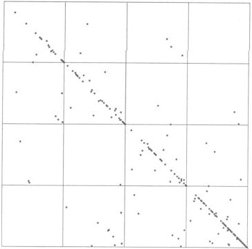
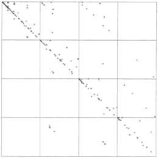

|  |  | |
| Click to animate. | Click to stop. |
| The highest ρ value is between Nokia and Microsoft, yet their driven IFS have some significant differences. | ||||||
| For example, they look a bit like the reflections of one another across the diagonal. | ||||||
| Visually, the Microsoft plot looks most like that of Coca-Cola. | ||||||
| Click the picture on the left for an animation comparing Microsoft and Nokia. Click the picture on the right for an animation comparing Microsoft and Coca-Cola. | ||||||
|
Retrun to Address correlation.